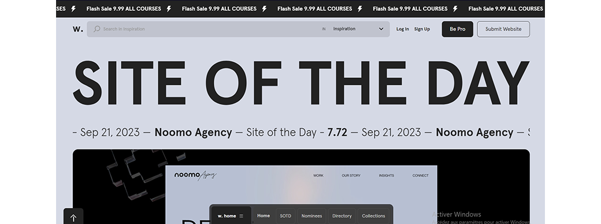

Je vous présente aujourd'hui ma veille technologique qui porte sur le site AWWWARDS. Tous d'abord je tien à definir ce qu'est une veille technologique. La veille technologique ou veille scientifique et technique consiste à s'informer de façon systématique sur les techniques les plus récentes et surtout sur leur mise à disposition commerciale (ce qui constitue la différence entre la technique et la technologie)
Awwwards est une plateforme qui reconnaît et promeut le talent et les efforts des meilleurs développeurs, designers et agences web du monde entier. Les sites web soumis sont évalués et récompensés pour leur excellence en matière de conception et de développement. Vous pouvez explorer les sites gagnants pour trouver de l’inspiration
Awwwards met en avant les meilleures pratiques en matière de conception web. Vous pouvez discuter des tendances, des nouvelles techniques et des innovations dans le domaine du design web. Par exemple, comment les sites primés utilisent-ils la typographie, les animations, la navigation et les interactions utilisateur ?
Awwwards présente des portfolios d’agences renommées. Vous pouvez explorer ces portfolios pour découvrir des exemples de projets réalisés par des agences créatives. Discutez des stratégies de présentation, des projets marquants et des approches uniques adoptées par ces agences
Awwwards propose des collections thématiques qui regroupent des sites web en fonction de différents critères. Vous pouvez explorer des collections telles que l’inspiration, les galeries, les transitions, les pages d’erreur 404, les jeux, etc. Ces collections offrent une mine d’idées pour vos propres projets de conception web
L’Académie Awwwards propose des cours dispensés par des experts. Vous pouvez discuter des cours, des ateliers et des ressources disponibles pour les designers et les développeurs web. Par exemple, comment créer des systèmes de conception à l’aide d’outils comme Figma ?